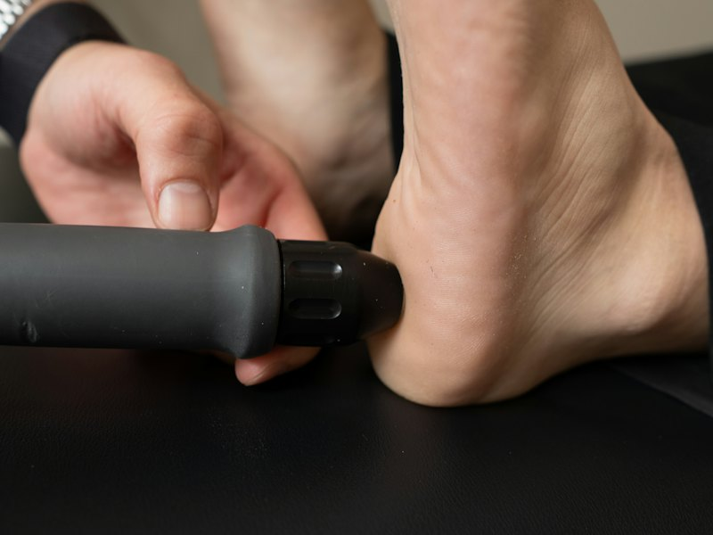
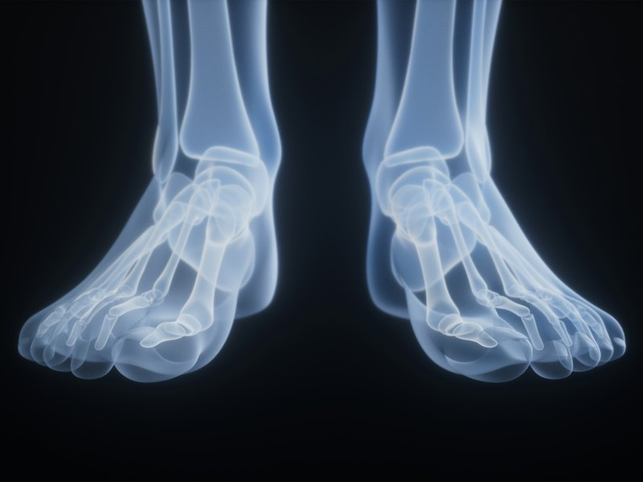
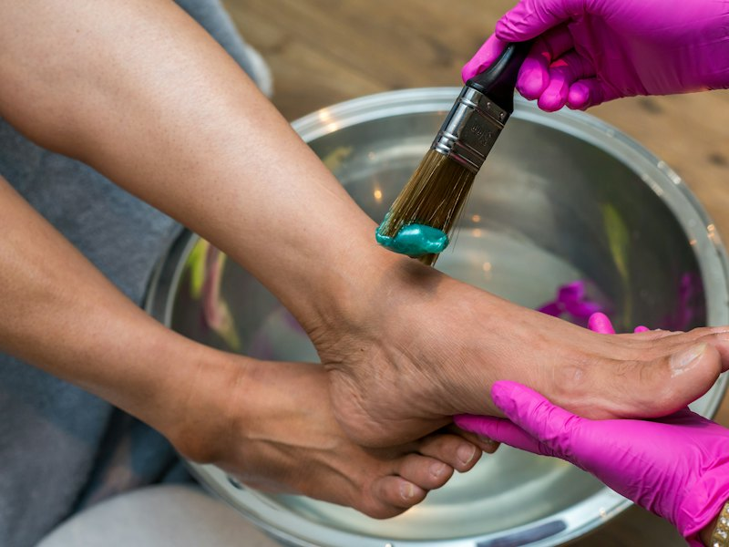
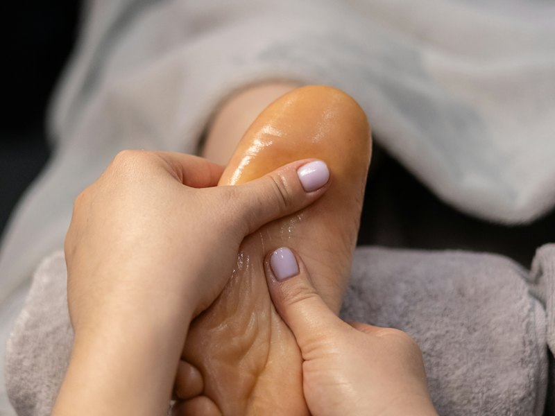
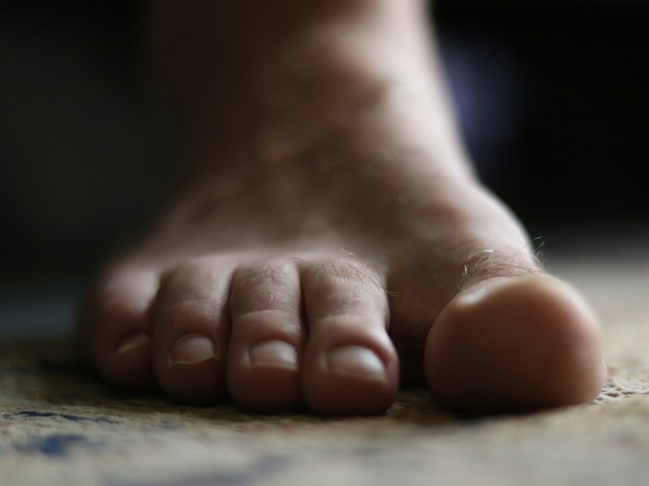

Лікуємо врослий ніготь, мозолі, бородавки й грибок нігтів, робимо медичний педикюр. Прийом ведуть спеціалісти з вищою медичною освітою, центр працює 9 років.
Оберіть послугу й залиште заявку: ми зателефонуємо й підтвердимо час прийому.
огляд стоп і нігтів, план лікування
обробка й корекція врослого нігтя
обробка й видалення мозолів
видалення бородавок
обробка уражених нігтів
догляд за стопами й нігтями
при деформаціях стопи й вальгусі
навчання для спеціалістів
Прийом ведуть спеціалісти з медичною освітою та практикою в подології.
Центр подології працює вже 9 років. У Google 5.0 за 205 відгуками.
Врослий ніготь, мозолі й натоптиші, бородавки, грибок нігтів, деформації стопи.





Фото ілюстративні.
Реальні відгуки клієнтів у Google
Залиште заявку, підтвердимо час.
Коротко про головне
Врослий ніготь, мозолі й натоптиші, бородавки на стопах, грибок нігтів, деформації стопи (ортези, устілки). Також робимо медичний педикюр.
Спеціалісти з вищою медичною освітою. Центр подології PodologVin працює у Вінниці 9 років.
Вінниця, вул. Академіка Янгеля, 24Б.
Залиште заявку на сайті або зателефонуйте: 097 777 6590.
Так, у центрі проходять курси з подології. Деталі за телефоном 097 777 6590.
Пишіть або телефонуйте, відповімо.
097 777 6590 Instagram @podologvin вул. Академіка Янгеля, 24Б, Вінниця